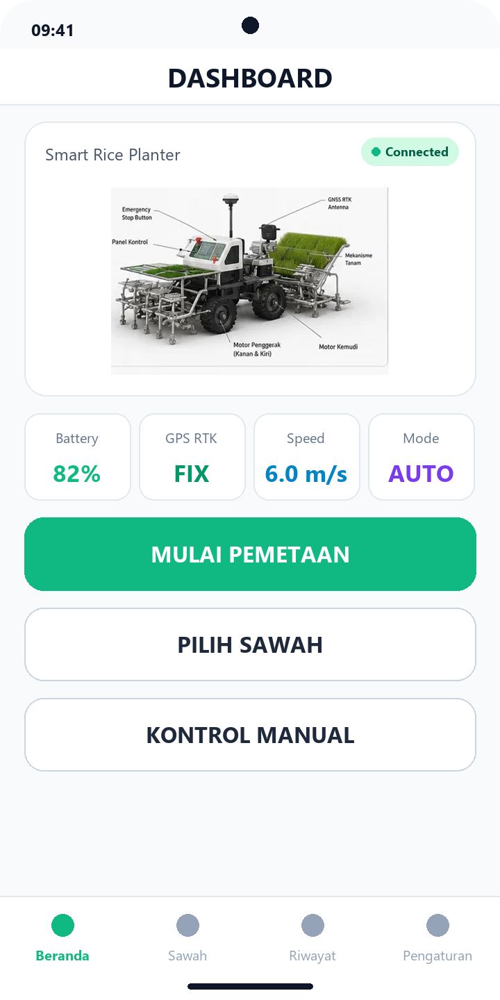
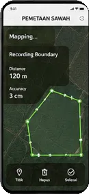
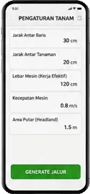
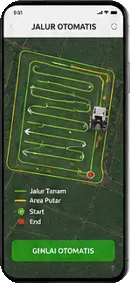
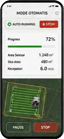
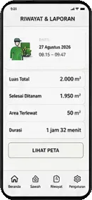
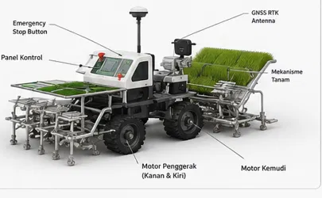
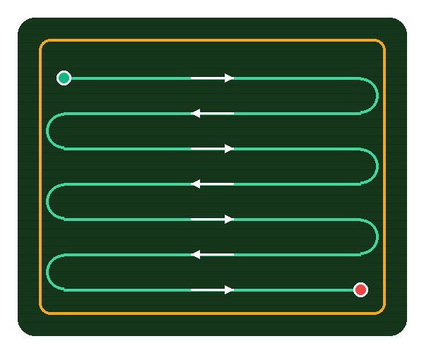
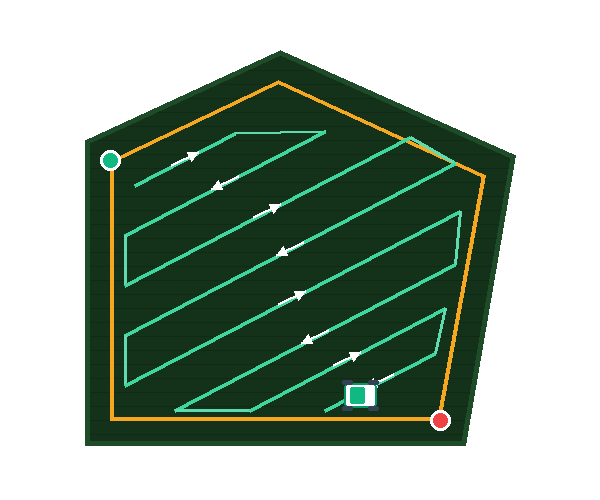
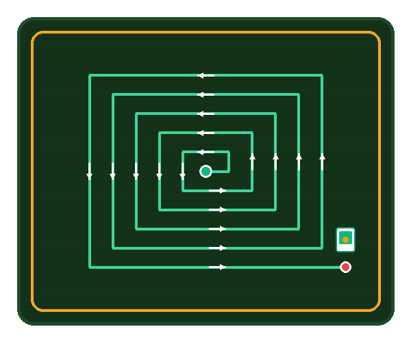

Mengunduh APK Android v1.1 & Arduino Firmware...
PadiBot mengotomatiskan proses tanam padi sawah dengan mikrokontroler Arduino Mega, pemetaan batas satelit berakurasi 3 cm, dan kontrol telemetri 100% offline.
Klik setiap kartu di bawah untuk meninjau detail tangkapan layar asli aplikasi secara interaktif dalam format 3D.

Menampilkan status telemetri robot secara komprehensif: persentase baterai 82%, kualitas sinyal GPS RTK, kecepatan bergerak 6.0 m/s, serta mode penanaman AUTO. Dilengkapi tombol cepat untuk mulai pemetaan, memilih sawah, dan kontrol manual.





Coba langsung algoritma penanaman padi otonom di kanvas browser. Buat poligon sawah atau pilih preset lahan, lalu jalankan robot.
Klik titik nomor inspeksi pada model 3D mesin untuk meninjau spesifikasi modul antena, kontroler, mekanisme tanam, dan motor penggerak.

Otak utama robot yang memproses navigasi otonom, kendali motor driver, encoder roda traktor, dan telemetri nirkabel ke smartphone.
PadiBot mendukung berbagai bentuk lahan sawah dengan strategi putar headland otomatis untuk efisiensi bahan bakar dan bibit.

Pola Boustrophedon standar dengan lintasan lurus bolak-balik yang paling efisien untuk petak sawah simetris.

Algoritma poligon adaptif yang menyesuaikan sudut tikungan untuk sawah miring atau kontur perbukitan.

Pola konsentris spiral (obat nyamuk) mulai menanam dari titik tengah lahan, lalu berputar melingkar keluar hingga memenuhi seluruh sawah tanpa manuver putar tajam.